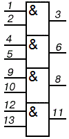
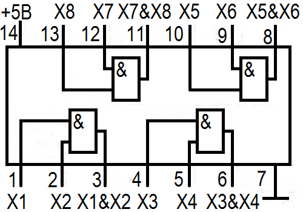

Микросхема К155ЛИ1
Микросхема К155ЛИ1 (КМ155ЛИ1) представляет собой четыре логических элемента 2И. Принципиальная схема одного элемента микросхемы К155ЛИ1 приведена на рисунке 3.
Микросхема К155ЛИ1 выпускается в корпусе типа 201.14-1, масса около 1 грамма
Микросхема КМ155ЛИ1 выпускается в корпусе типа 201.14-8, масса около 2,2 грамма.


Таблица 1
| Параметр | Значение |
|---|---|
| Номинальное напряжение питания | 5В±5% |
| Выходное напряжение низкого уровня | ≤0,4 В |
| Выходное напряжение высокого уровня | ≥2,4 В |
| Входной ток низкого уровня | ≤-1,6 мА |
| Входной ток высокого уровня | ≤0,04 мА |
| Входной пробивной ток | ≤1 мА |
| Ток потребления при низком уровне выходного напряжения | ≤33 мА |
| Ток потребления при высоком уровне выходного напряжения | ≤21 мА |
| Потребляемая статическая мощность на один логический элемент | ≤36 мВт |
| Время задержки распространения при включении | ≤19 нс |
| Время задержки распространения при выключении | ≤27 нс |
Зарубежные аналоги
Зарубежным аналогом микросхем К155ЛИ1, КМ155ЛИ1 является микросхема 7408.